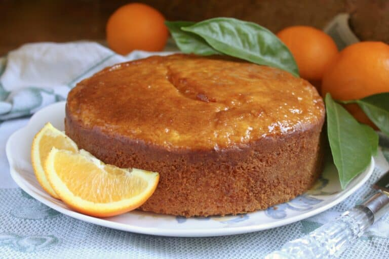

Whole Orange Cake

Sicilian whole orange cake is a moist and delicious crowd-pleasing dessert. It is called a whole orange cake, because the entire orange is used, peel and all. Perfect for any occasion, but such a treat with a cup of tea or coffee.
Ingredients
Cake
- 3 eggs
- 1 1/8C (250g) sugar
- 1 3/4C (275g) all purpose flour
- 2 1/2tsp baking powder (or 1 packet Italian Pane Degli Angeli vanilla baking powder)
- 1/3C (100g) butter, softened
- 1/3C (100g) plain Greek yogurt (yes, sour cream works, too)
- 1 large organic orange, about (300g), washed and cut into pieces (with the rind, but remove the seeds)
- (if using plain baking powder add 1 tsp vanilla extract)
Glaze
- juice of one organic orange
- 1/3C (100g) sugar
Instructions
Cake
- Prepare an 8" springform pan by spraying with oil (or butter) and lining in parchment paper (sides optional, if you want really clean sides), then spray the paper, too.
- Place the sugar and eggs in a large bowl and beat with a mixer until light and fluffy.
- Sift the flour with the baking powder or Paneangeli then add to the mixture in the bowl a little at a time along with the softened butter. Continue to mix until completely blended, then stir in the yogurt.
- In a food processor, process the whole orange until it is almost pureed.
- Add this orange to the cake mixture (along with the vanilla if you used plain baking powder) and stir until evenly combined, then put the batter into the prepared tin.
- Bake for 50-60 minutes (depending on your oven), but test with a cake tester or skewer to make sure the orange cake is done before removing from the oven. Allow to cool for about 15 minutes, then remove the side of the springform pan.
Glaze
- Prepare the glaze by melting the sugar in the orange juice and allow to simmer for a few minutes, just until the liquid has a syrupy consistency.
- Spoon and brush over the top of the cake and allow to cool completely before cutting.